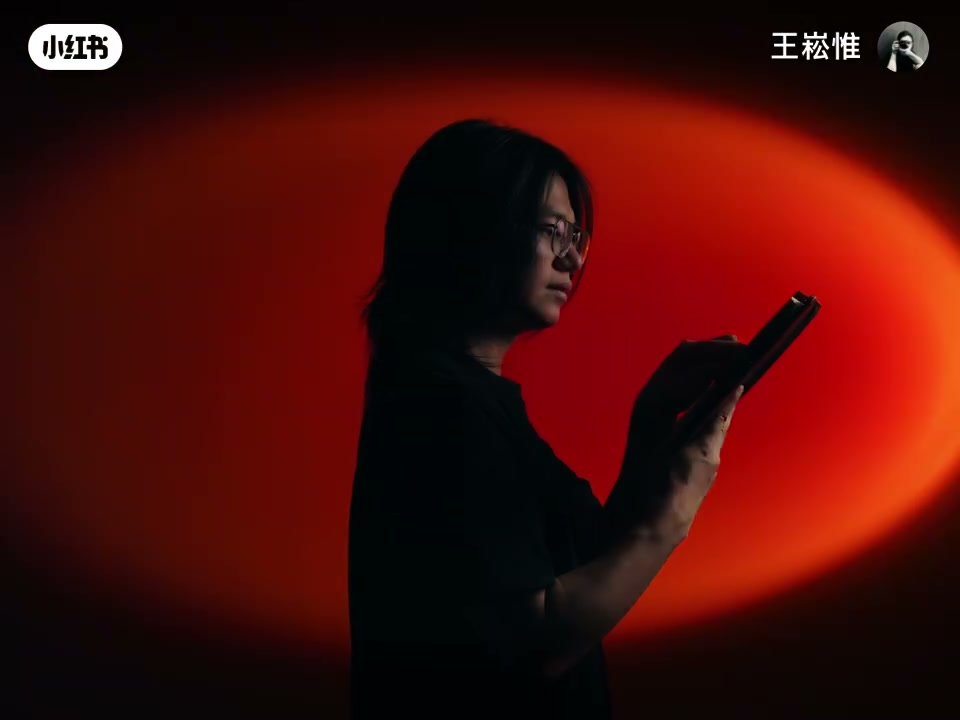
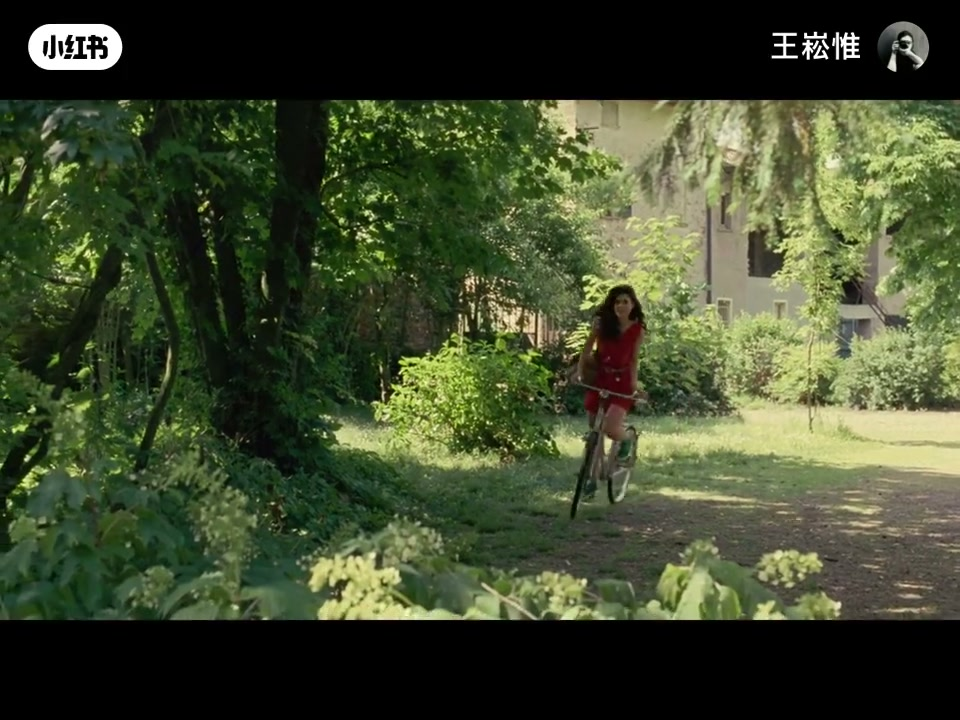
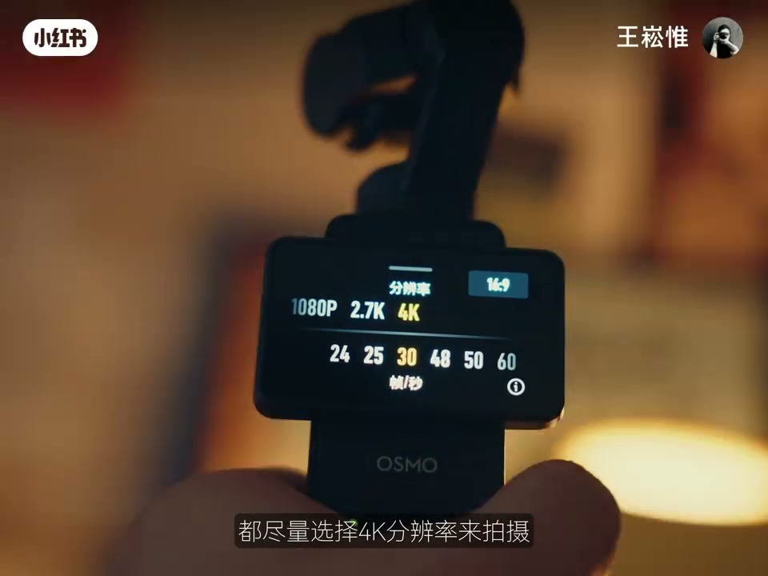

内容要点
一段 3 分 20 秒的视频清晰度教程。核心观点：4K 不清晰不是分辨率问题，而是光——光线不足产生噪点、细节模糊、主体背景糊在一起。解法分两条路：拍摄时制造明暗反差（45度单独打亮主体）+ 色彩反差（对比色让主体鲜明）；后期补救（提对比度、调饱和度）。参数建议：4K 拍摄（细节多还能二次构图）、4K 导出、码率最高、H.264 编码、电脑端网页上传。五点全做到手机相机都清晰，新手可选一点起步。
知识结构
4K 看起来不如 1080P 清晰，问题不在分辨率而在光——光线不足→噪点、细节模糊、明暗反差不足。
最简单的是靠近窗户用自然光；窗户小就加灯。但只是均匀提亮环境，看起来还是不清晰。
复杂环境要制造明暗反差才能让主体站出来——45度单独打亮人物，让主体比背景亮。
晚上用台灯/日落灯增加背景光，让人物与背景分离。
让主体与背景颜色形成对比色，主体更鲜明突出，画面显得更清晰。
拍完也能救：明暗反差不够就提对比度；饱和度不够就调饱和度。
4K 拍摄+4K 导出+码率最高+H.264 编码+电脑端网页上传，画质最好。
视频清晰的本质是『反差』而非分辨率：光线充足避免噪点，明暗反差（45度侧光打亮主体）让主体从背景站出来，色彩反差（对比色）增强主体鲜明度，后期提对比度/饱和度补救。参数上：4K 拍摄（能二次构图）、4K 导出、最高码率、H.264、电脑端网页上传。五点不必一步到位，从任一点开始都有提升。
00:00-00:22谜题：4K 为什么不如 1080P 清晰？
开场直接放两组画面：「这是4K画面，这是1080P画面。」然后抛出问题——为什么4K看起来还没有1080P清晰？
答案就一个字：光。「光线不足会导致画面出现噪点，让细节模糊，而且明暗反差会感觉主体和背景糊在一起，自然在观感上就不清晰了。」

00:22-00:59基础解法：靠窗、加灯，但均匀提亮不够
最简单的方法：「靠近家中的窗户」，用自然光。窗户很小又没法靠近拍摄？「那就得用灯」。
但这里有个关键发现：「如果只是简单地提亮整体的环境，看起来好像也不是很清晰。」均匀的亮度解决不了主体与背景不分的问题。
00:59-01:28核心原理一：明暗反差
自然光线下拍摄的镜头背景干净不干扰主体，所以清晰；但复杂环境中，「我们需要制造明暗反差，才能让主体从背景中站出来」。
具体做法：「从45度单独打亮人物，让主体比背景亮一些，画面有了反差就会显得很清晰。」明暗分离是清晰的底层机制。
01:28-01:37夜景解法：背景光分离主体
晚上窗外没光，如果和白天一样只有一盏灯，人物的轮廓和背景就会糊在一起。
补救：「用家里的台灯或者日落灯，增加背景光，让人物和背景分离出来。」主角要亮，背景也要有层次。
01:37-01:54核心原理二：色彩反差
除了明暗反差，色彩反差同样有效——「这是电影中常用的方式」。
做法：「让主体的颜色和背景的颜色形成对比色，主体就会更加的鲜明突出，那画面也就会看起来更清晰。」

01:54-02:22后期补救：对比度与饱和度
画面已经拍完了怎么办？「可以用后期软件」。两种典型情况：
①「如果只是画面看起来明暗反差不够，那就增加整体的对比度」；②「画面有色彩但饱和度不够，也会看着不清晰，可以在后期软件中调整饱和度数值」。后期是锦上添花，但前提是前期有足够素材。
02:22-03:07拍摄与导出参数
拍摄：「不管用什么拍摄设备，都尽量选择4K分辨率来拍摄。4K不仅比1080P有更多的细节，还能二次构图减少多余元素。」
导出：「导出分辨率我会选4K，码率调到最高，编码选H.264。」所有平台都上传4K视频，「最好用电脑端网页上传，画质会比手机上传要好一些」。
收尾：「如果做到上面这五点，你不管是用手机还是相机拍视频都会很清晰。」新手不必一口气做到，可以选择其中一点开始做。

完整转录（84段）
以下文本由 Whisper medium 模型自动转录，可能存在少量识别误差，已尽可能修正。
这是4K画面
这是1080P画面
为什么4K画面看起来还没有1080P信息
对啊 为什么呢
因为光
光线不足会导致画面出现噪点
让细节模糊
而且却让明暗反差会感觉主体和背景糊在一起
自然在观感上就不清晰了
那最简单的解决方法就是靠近家中的窗户
灯灯
那要是我家的窗户很小
又没有办法靠近拍摄
那该怎么办
那就得用灯
但如果只是简单的体谅整体的环境
看起来好像也不是很清晰
但如果是这样的话
是不是清晰多了
那这种是没差的
因为刚才在自然光线下拍摄的镜头
它的背景都是很干净的
不会干扰到主体
但在这种复杂的环境中
我们需要制造明暗反差
才能让主体从背景中站出来
比如像我这样
从45度单独打亮人物
让主体比背景亮一些
画面有了反差就会显得很清晰
那到了晚上窗外没光
如果和白天一样
只有一盏月光
那人物的轮廓和背景就会糊在一起
而且画面提升了氛围
我们可以用家里的台灯
或者日落灯
增加背景光
让人物和背景分离出来
哦
所以说画面清晰的关键
是要有明暗反差
要突出主体
那色彩的反差
是不是也可以让画面更清晰
是的
这是电影中常用的方式
让主体的颜色和背景的颜色形成对比色
主体就会更加的鲜明突出
那画面也就会看起来更清晰
那要是我的画面已经拍完了
能不能用后期软件
让视频更清晰一些
当然可以
打开任意一个后期软件
如果只是画面看起来会明暗反差不够
那就增加整体的对比度
还有一种情况是画面有色彩
但是饱和度不够
也会看着不清晰
可以在后期软件中调整饱和度数值
也能达到让画面清晰的效果
最后我们来聊聊拍摄和导出的参数
首先不管是用什么拍摄设备
都尽量选择4K分辨率来拍摄
4K不仅比1080P有更多的细节
还能二次构图减少多余元素
导出分辨率我会选4K
码率调到最高
编码选H.264
所有的平台我都会上传4K视频
最好用电脑端网页上传
画质会比手机上传要好一些
如果做到上面这五点
你不管是用手机还是相机拍视频
都会很清晰
但新手想要一口气做到上面这几点
可能会有一点困难
不过没关系
你可以选择其中的一点开始做
都可以让你的视频更清晰一些
好了那以上就是本期的全内容了
希望这期视频能对你有所帮助
那我们下期再见